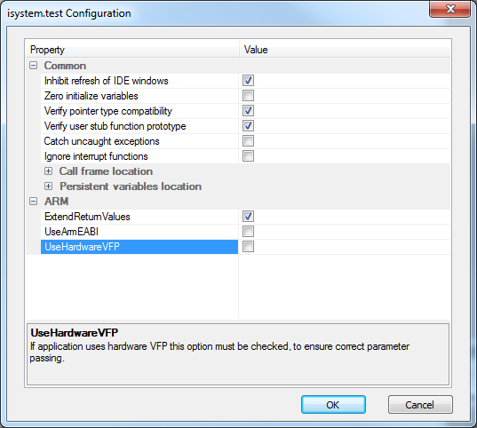

Low level configuration of isystem.test, which includes also target dependent settings, is accessible in winIDEA with command These settings are stored in winIDEA project (xjrf) file.
It is highly recommended to review these settings before running tests. Because some of them depend also on compiler flags, winIDEA can not always set correct defaults!
